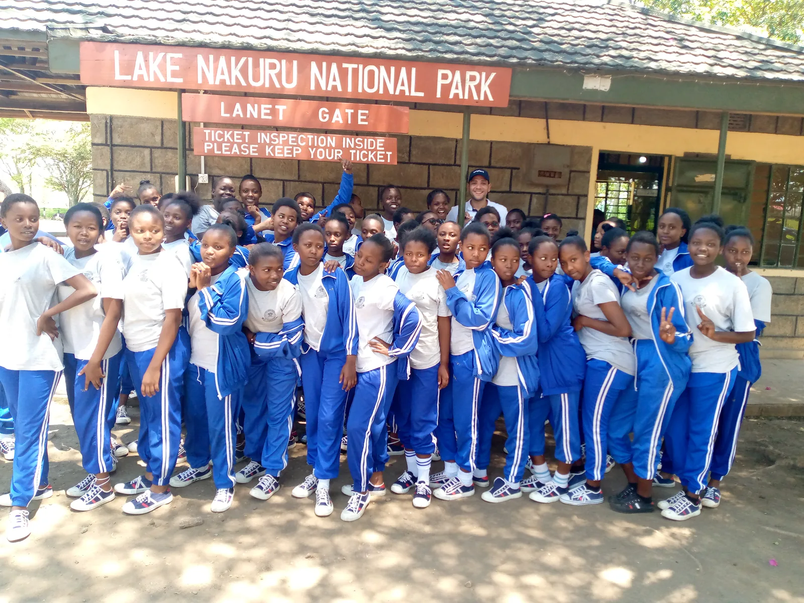

STEM
Our combinations include pure and applied sciences. Options draw on subjects such as Biology, Chemistry, Physics, Agriculture, and Computer Studies.
Compare STEM combinationsMukaa · Makueni County, Kenya
Welcome to Kasikeu Girls, a public girls’ boarding school in Mukaa, Makueni County. Explore our history, see what we study, and discover life beyond the classroom.

Our school
We are a public girls’ boarding school in Mukaa Sub-County, Makueni County. Our school story includes classroom development in the early 2000s, the expansion of our administration and teaching spaces, and our transition to senior school.
Explore our historyA classroom development project received funding through Kilome constituency.
Our archived KCSE results show a mean score of 4.154 in 2009 and 5.174 in 2010.
We joined Kenya’s senior school register as a public C3 girls’ boarding school.
Academics
We offer six Grade 10 subject combinations across two pathways. Each combination brings together three subjects that learners can compare when planning their next step.
Our combinations include pure and applied sciences. Options draw on subjects such as Biology, Chemistry, Physics, Agriculture, and Computer Studies.
Compare STEM combinationsExplore combinations that build on interests in business, literature, Kiswahili, geography, and history.
Compare Social Sciences combinationsExplore our roots in Kasikeu and the milestones that have shaped our campus.
Read our storyCompare our STEM and Social Sciences pathways, and see where each subject combination fits.
Explore our pathwaysPrepare for boarding and get to know our drama, sports, and community activities.
Discover school lifeFollow the placement steps and use our checklist to plan for reporting day.
See our joining guideView mean scores, grades, and candidate numbers for our 2009 and 2010 KCSE cohorts.
View past resultsFind curriculum guides, assessment timetables, and official education links.
Browse resourcesFor families
Find us in KEMIS under Kasikeu Girls High School using institution code CV7S. After placement, use your joining instructions to confirm reporting details, required documents, boarding supplies, and official fees.
Open our reporting checklistOur school is in Kasikeu, Makueni County. Open our campus map to locate the school and plan your journey.